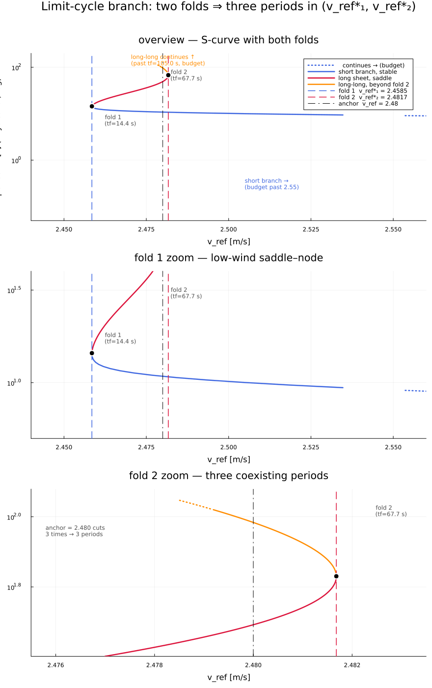
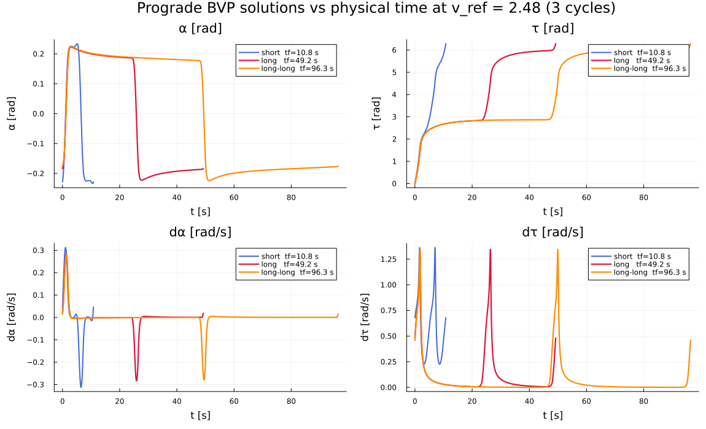
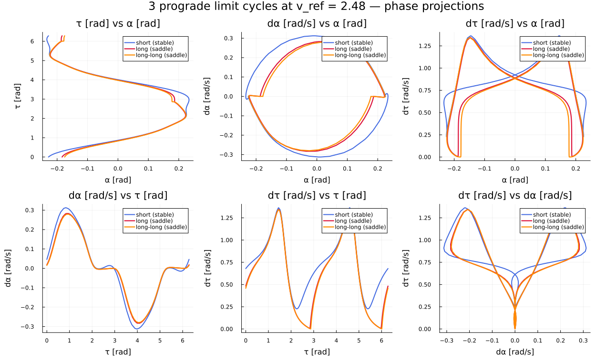

Dense output evaluated on a logarithmically regular grid. Without callback: O(t) residual on speed, integrated to O(t^2) residual on position. The callback removes the trend, making the residuals O(1) for both, it does not correct for phase error.
No callback is ok for short integrations, but error accumulates (here exagerated by loose tolerance and an order 5 scheme instead of 9 used otherwise), callback fixes that, at some cost
┌ Info: Timing
│ reference (10D, no callback) = 44 ms
│ reference + callback = 54 ms
│ proposed model (4D) = 5.9 ms
│
│ reference to reference+callback = 1.25x slowdown
│ reference to proposed model = 7.44x speedup
└ reference+callback to proposed model = 9.29x speedup
As we reduce the integration tolerance and for each mof the three models, the sequence of trajectories converge toward the same reference, tight-tolerance trajectory (max_{t in range(0, t_f, N=1001) norm(x_i(t) - x_ref(t))}, where norm is the Euclidean norm on R^3, x_i is the trajectory of interest and x_ref is the reference trajectory). Therefore, we confirm that the model presented in the main section of this paper is equivalent to the original 10D model.
ddq(q, dq=(0,0)), where nullclines cross, there is an equilibrium. Red background = upwind arm
Configuration for each equilibria, not a physical representation -- lines and arm are aligned in a vertical plane for all equilibria
Trajectory seems to converge rapidly toward a limit cycle
Depending on init, we have two different limit cycles: prograde(dτ > 0) and retrograde (dτ < 0). They follow different path in 3D space.
start with q=(0,0), dα = 0 and dτ = 1, integrate of record distance on surface of section


